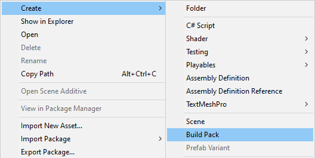
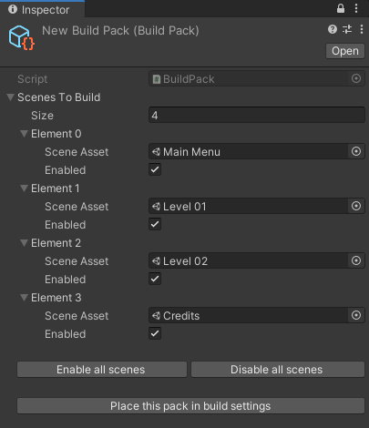

Build Packs are scriptable objects allowing you to store the scenes you want for a specific build.
This can be useful during the development of your project if you need to build test scenes without having to place back your main scenes in the build settings after your tests.
Create a build pack in your project window with "Create > Build Pack".

Drag and drop your scenes in your build pack, enable the ones you want in your build and click "Place this pack in build settings" to place the scenes in the build settings.
Note that disabled scenes in the pack will not be placed in the build settings.
